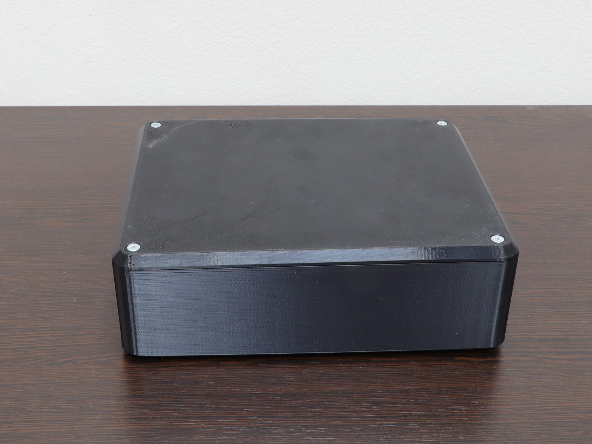
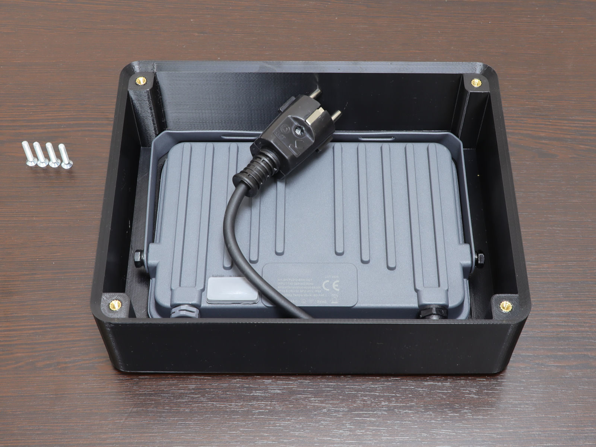
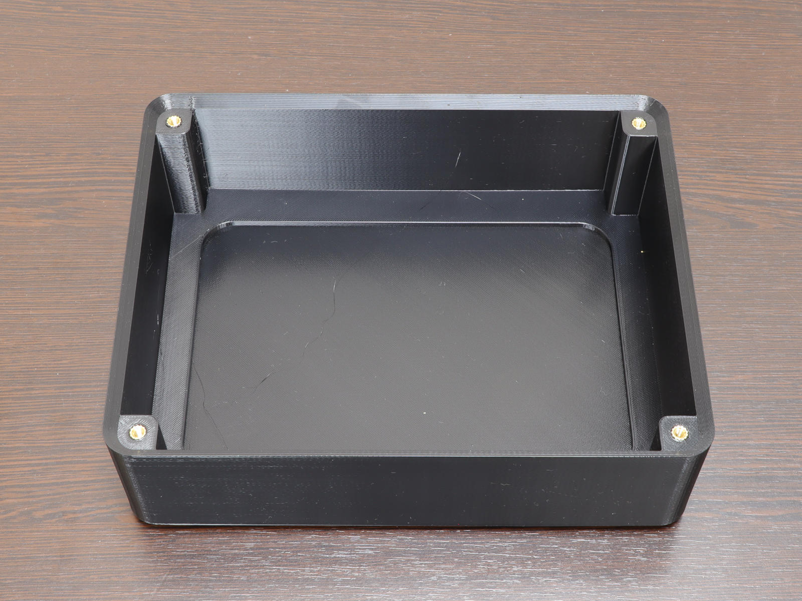
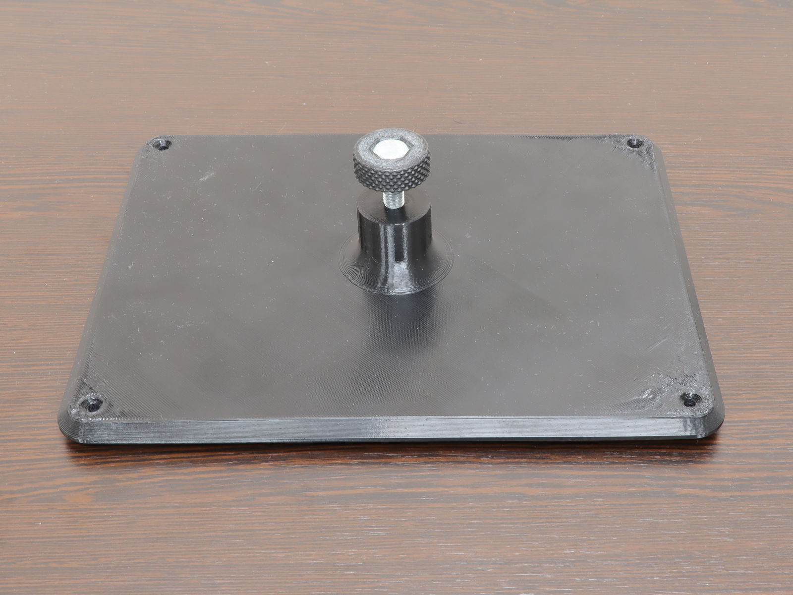
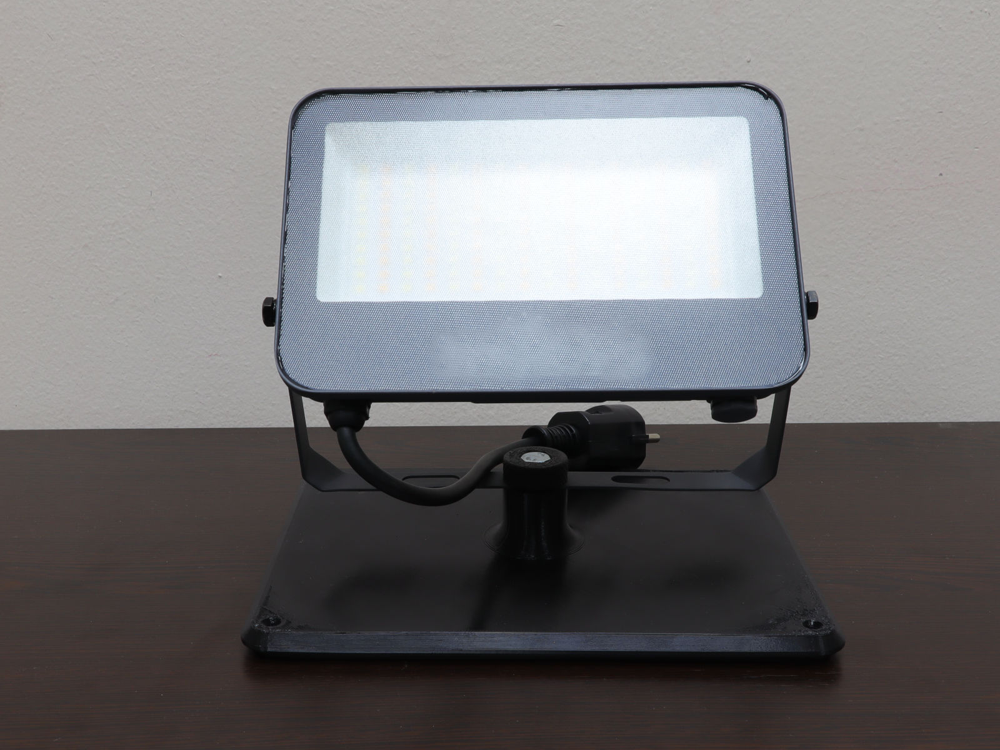
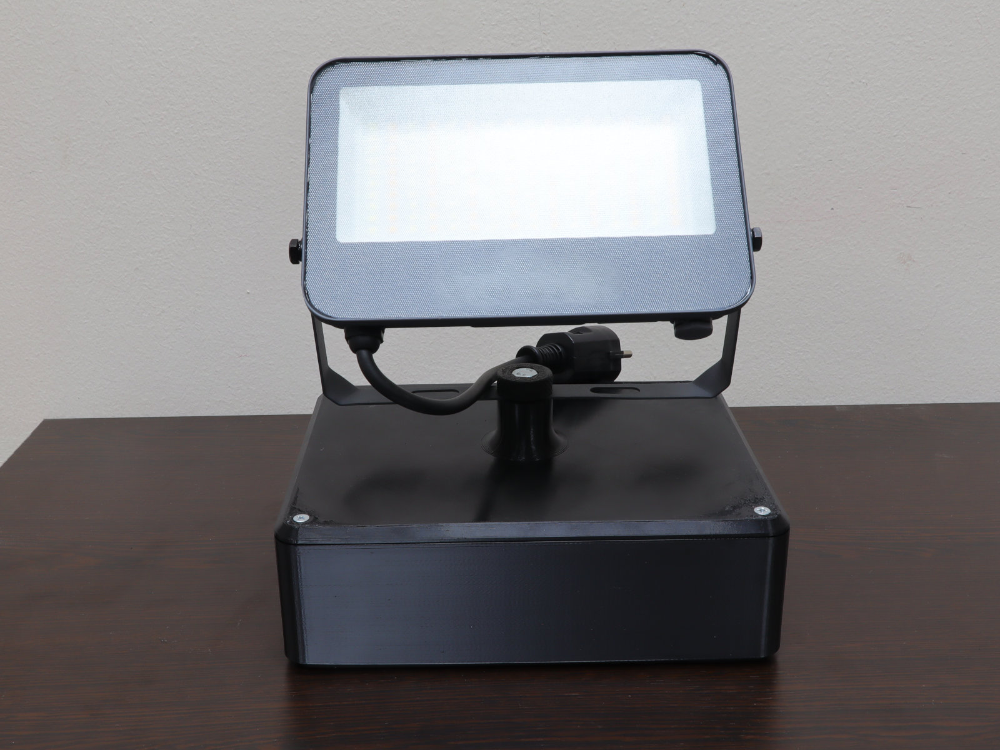
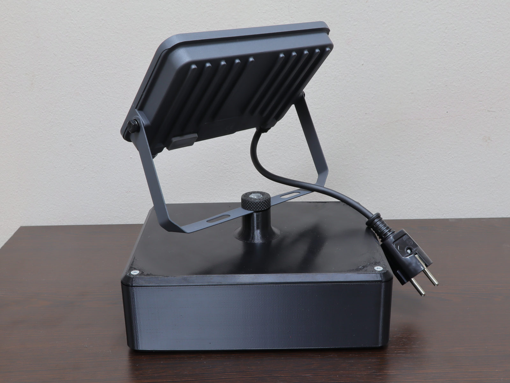

Floodlight case
By Andreas Bertsatos
A case for a small LED floodlight, whose lid turns over into its stand. Right way up, the light is stored inside the box. Turned over, the post under the lid stands up, the light's bracket rests on it, and the knurled knob clamps the bracket.
The light sits in a pocket in the box's floor, 191 x 131 mm with corners rounded 15 mm, and may be up to 24 mm thick: at 24 mm the knob, fully screwed in under the lid, touches the light's back face.







Making it
Requires: drafting ≥ 0.2.2, parts ≥ 0.2.0
pkg load drafting parts
[A, body, lid, knob] = floodlight_case ();
show (A);
write (body, 'body.3mf');
write (lid, 'lid.3mf');
write (knob, 'knob.3mf');
test floodlight_caseEvery size is a variable at the top of the function: change one and run it again. Building takes about 20 seconds, most of it the knurl and the thread.
Loading the model…
Drag to turn, scroll or pinch to zoom, right-drag to move. Meshed for the screen, not for printing.
Materials
- 4 M4 heat-set inserts, 8.1 mm long; the holes take a 5.4 mm lead-in.
- 4 M4 x 20 countersunk cross-head screws (ISO 7046).
- 1 M8 x 25 hex head screw (ISO 4017).
Tools
- A soldering iron with a tip for M4 heat-set inserts.
- An M8 hand tap, to clear the printed thread.
How it goes together
- The lid is held by four M4 countersunk cross-head screws in heat-set inserts in the box's corner columns. Its holes are the fine clearance of ISO 273, 4.3 mm, countersunk on both faces for an ISO 7046 head, so the lid screws down either way up.
- The post under the lid has an M8 thread, 24 mm deep. The knob holds an M8 x 25 hex head screw, its head pressed into a hex pocket, and the screw goes through the slot of the light's bracket into the post.
- The printed thread comes out tight. Run an M8 tap through it once and the screw turns in smoothly.
Printing
On a Prusa Core One with a 0.4 mm nozzle:
| Part | Filament | Layer height | Infill | Print time |
|---|---|---|---|---|
| Knob | PETG-CF | 0.15 mm | 99% | 22 min |
| Lid | PETG | 0.2 mm | 15% | 3 h 28 min |
| Box | PETG | 0.2 mm | 15% | 5 h 30 min |